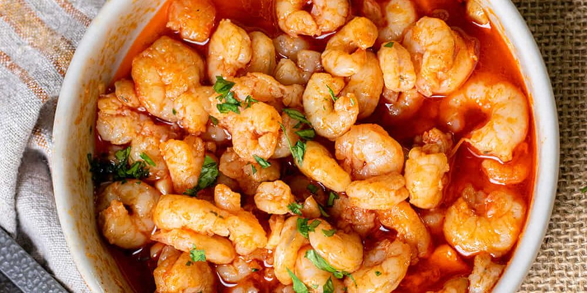

Gambas al ajillo
Receta de gambas al ajillo caseras.

Ingredientes
- colas de gambas blancas de buen tamaño
- 2 dientes de ajo
- cayena al gusto
- aceite de oliva virgen extra
- sal al gusto
Elaboración (pasos)
- pelar gambas para retirar sus cabezas, patas y caparazones.
- añadimos los ajos y las cayenas al aceite y dejamos que se doren.
- agregamos las gambas con un poco de sal (reposar 5 min).
Para volver pincha aquí.